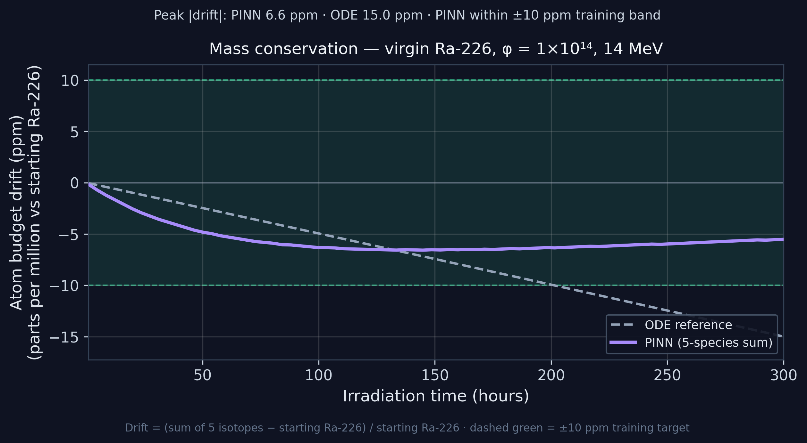
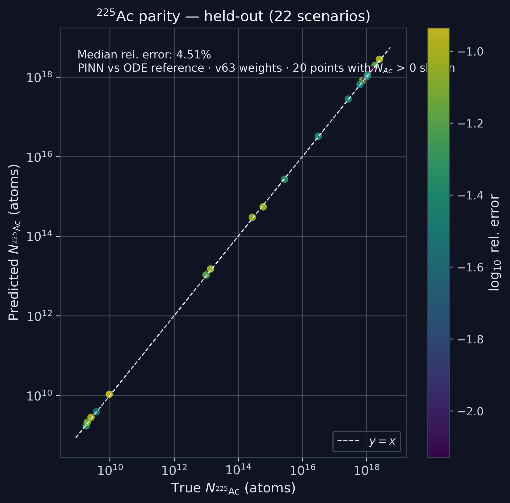
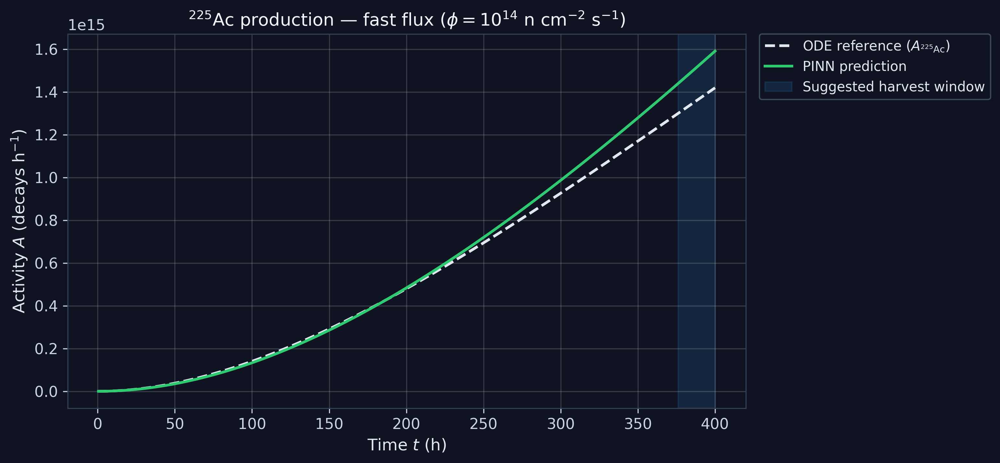

Actinium-225 is a scarce alpha-emitting radiopharmaceutical used in targeted alpha therapy (TAT) for cancer. Supply limits trials and treatment access.
Planning irradiation — neutron flux, energy, and time — requires solving a stiff five-isotope chain thousands of times. ODE integrators are accurate but too slow for large sweeps.
If Bateman physics is embedded in the network and loss, the PINN will match the ODE within 10% on held-out scenarios and run orders-of-magnitude faster than repeated ODE solves.
- Six validation gates PASS
- Held-out Ac-225 median < 10% vs ODE
- Best accuracy at thermal / 14 MeV
- Largest errors at epithermal & ~6.4 MeV threshold
Computational Surrogate for Ac-225 Production Planning in Targeted Alpha Therapy
- Build a 0D five-species Bateman ODE reference using NNDC/ENSDF half-lives and JENDL cross sections; integrate with stiff Radau solver.
- Generate training scenarios across thermal, epithermal, threshold (~6.4 MeV), and 14 MeV energies; virgin and recycled inventories.
- Train a physics-informed neural network with semi-analytic Bateman backbone + bounded corrections (600-epoch physics pretrain, 3,400-epoch joint; v63 weights).
- Enforce mass-budget constraints in the loss so the model cannot predict production from an empty target.
- Validate with six independent gates: empty-tank safety, production scenario, decay ingrowth, quality gate, correlation, and 22 held-out cases.
- Deploy an interactive Streamlit demo for live PINN vs ODE comparison and parameter screening.

1 Mass conservation. Five-species atom budget drift (ppm) vs time; PINN within ±10 ppm training band. Virgin Ra-226, φ = 1×10¹⁴, 14 MeV.
| Check | Result |
|---|---|
| Empty-target safety | PASS |
| Production (14 MeV) | PASS (9.9%) |
| Decay-chain ingrowth | PASS |
| Quality gate | PASS |
| Correlation | PASS |
| Held-out Ac-225 (22) | 4.51% median |

2 Ac-225 parity (held-out). PINN vs ODE on 22 scenarios; median relative error 4.51%. Points with Ac-225 > 0 shown on log axes.

3 Isotope evolution. Ac-225 activity vs irradiation time; PINN tracks ODE reference for production planning.
The PINN passed 6/6 gates with 4.51% held-out Ac-225 error vs ODE — enabling rapid screening not practical with repeated stiff solves. Strongest regimes: thermal and 14 MeV (~4–5%). Weakest: epithermal (~9.5%) and threshold (~8.5%).
Limitation: Validated vs ODE only — not reactor lab or clinical data. 0D model; not patient dosing or 3D transport.
Key References
Raissi, M., et al. (2019). Physics-informed neural networks. J. Comput. Phys., 378, 686–707.
NNDC / NuDat — decay data for Ra-226, Ra-225, Ac-225, Ra-227, Ac-227.
JENDL-4.0 — Ra-226 (n,2n) and (n,γ) cross sections.
DOE Isotope Program — Ac-225 supply and targeted alpha therapy context.
Acknowledgements
Adult sponsor and science fair mentor. Faculty reviewers (pending). GPU training via Colab/Kaggle.
Live Demo
github.com/samogunnubi0-del/PINN